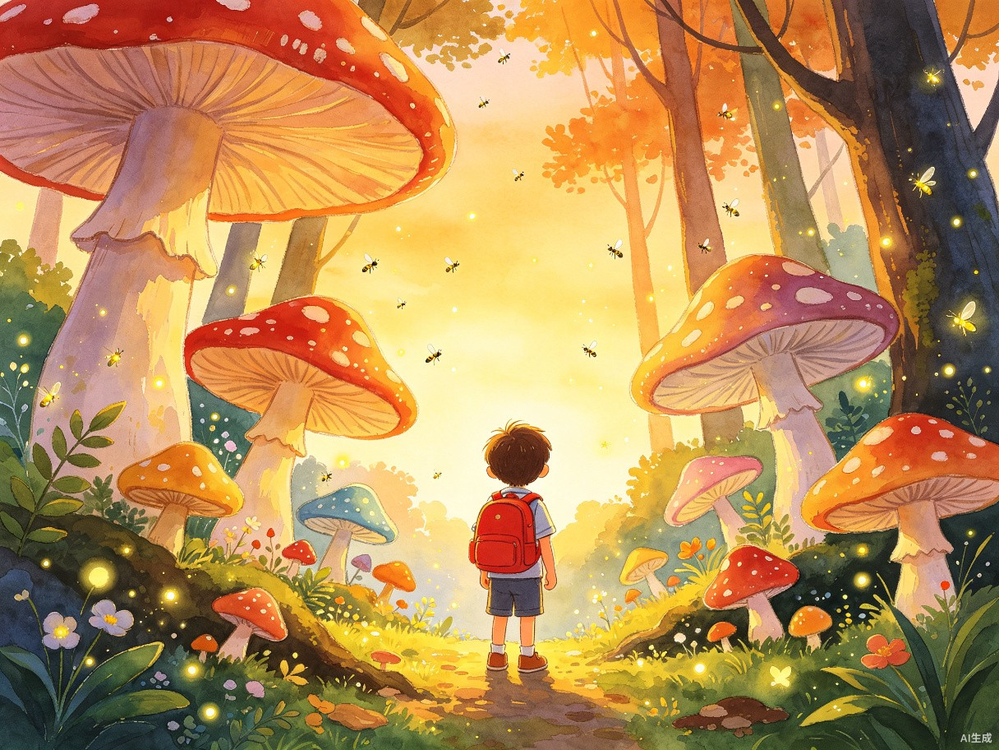
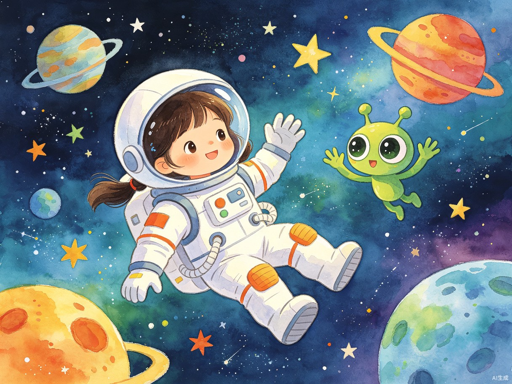
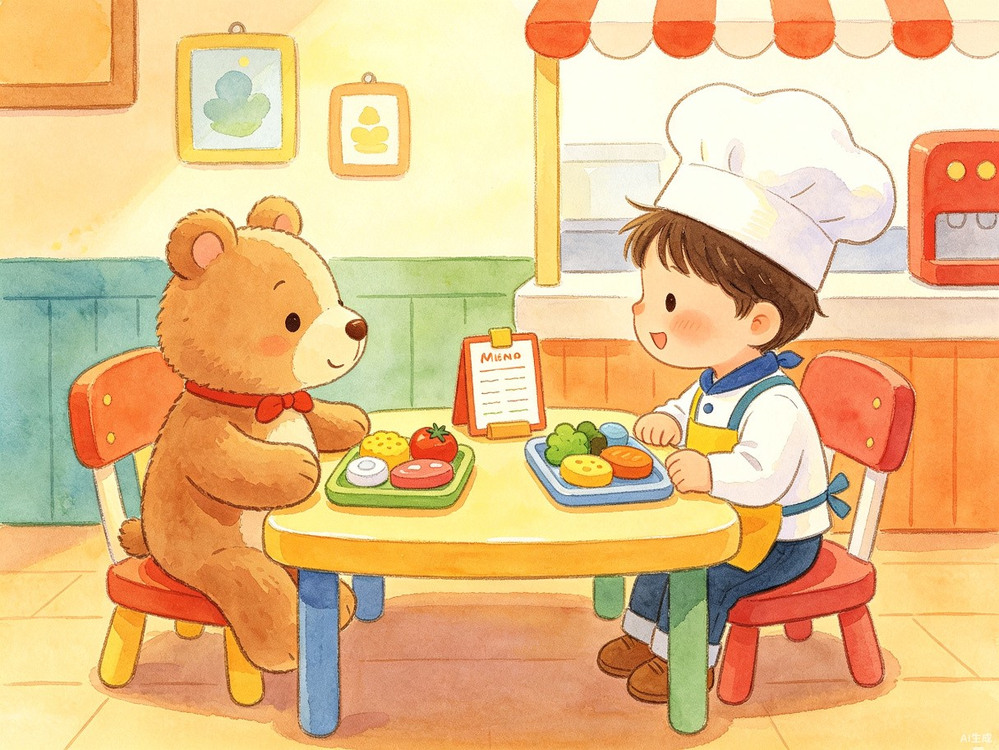

AI 讲故事
根据孩子的成长阶段和兴趣，AI 生成专属睡前故事。支持音色克隆，用家长的声音为孩子朗读。
自定义故事参数（演示版）
所有 AI 生成内容均经过安全审核，适合儿童阅读
选择示例故事
点击任意示例，即可查看 AI 生成的完整故事内容。

小明的魔法森林
4-6岁 · 冒险探索 · 10分钟

朵朵的太空探险
6-8岁 · 科普知识 · 15分钟

小熊乐乐的餐厅
2-4岁 · 生活成长 · 5分钟
故事朗读
用妈妈的声音朗读
0:00
3:24
AI 生成内容
→
家长预览确认
→
孩子安全阅读
家长预审
已开启
故事生成完成
朗读音色：妈妈
AI生成 · 已审核
故事大纲
AI 生成
查看 AI 是如何理解你的需求的
角色设定
你是一位专业的儿童故事作家，擅长根据孩子的年龄和兴趣创作温暖、有趣且富有教育意义的睡前故事。
年龄适配
目标读者年龄 4-6 岁，词汇量控制在 800-1500 字常用词范围内，句式简洁，避免复杂修辞。
教育目标
本期故事的教育目标是培养勇气，让孩子学会面对未知时勇敢迈出第一步。
互动设计
请在故事中嵌入 3-4 个亲子互动节点，包括预测提问、声音模仿、情感共鸣和选择题。
语气风格
温暖、鼓励、有安全感。用温柔的语调叙述，在冒险情节中适时给予孩子安全感。
AI生成 · 已审核
分镜脚本
绘本画面
AI生成 · 已审核